Short description of an early coding project or first experiment.
Featured Coding Projects
Placeholder summary text about learning HTML, CSS, JavaScript, and building portfolio projects. Explain your growth, goals, and how coding supports your design practice.
Short description of an early coding project or first experiment.
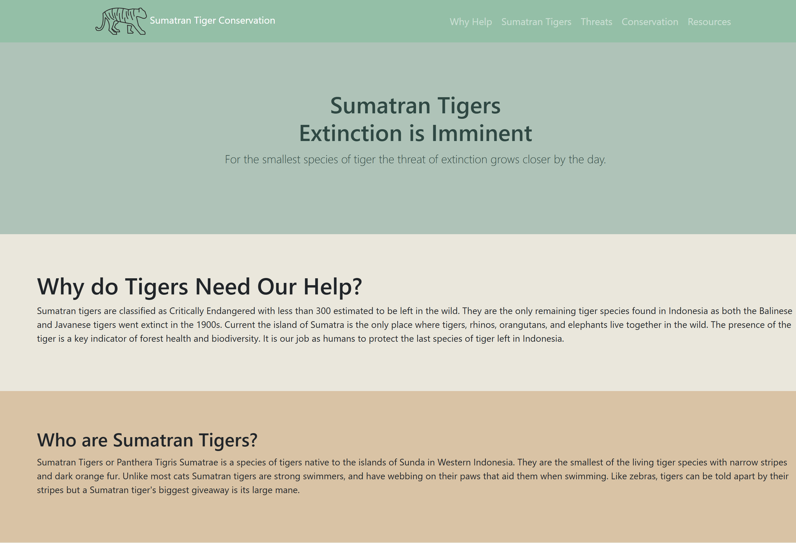
Short description of a design-to-code learning moment.
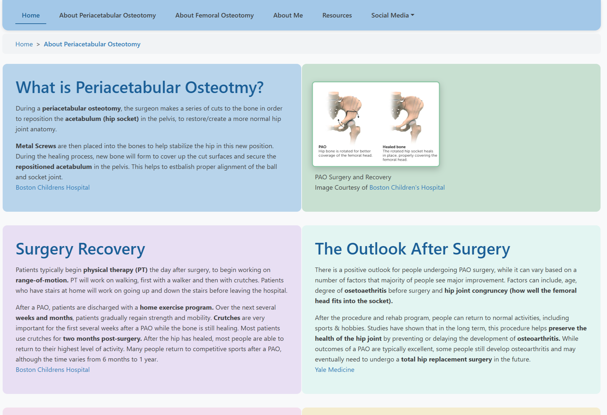
Short description of a current coding goal or portfolio direction.
These are the hand sketched wireframes for this portfolio. They showcase the layout design and location of the different elements, images, text blocks, and paragraph placements.
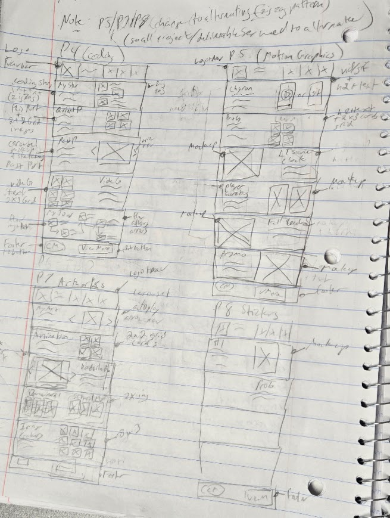
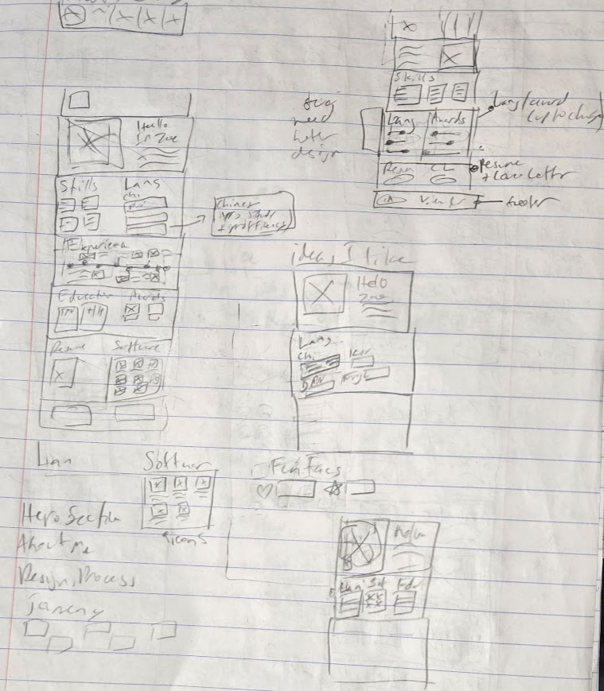
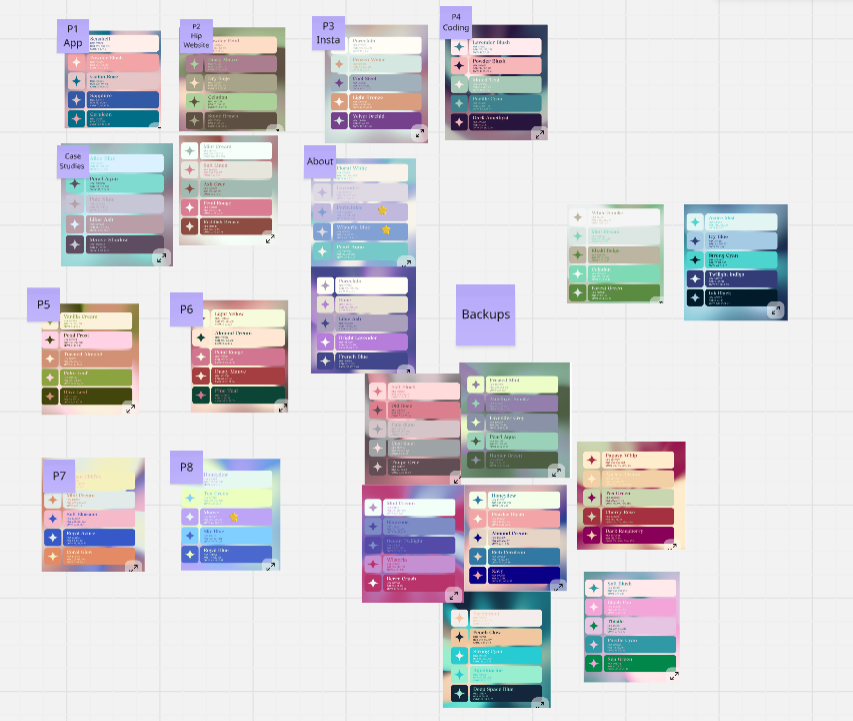
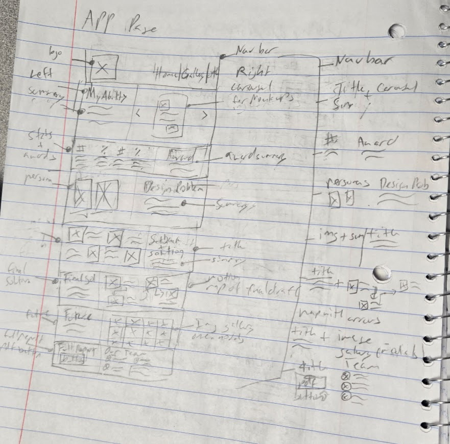
Placeholder body text describing earlier portfolio attempts, what changed over time, and what design/code lessons came from those versions.


Placeholder body text explaining a game project, interaction idea, rules, character design, mechanics, or JavaScript features.
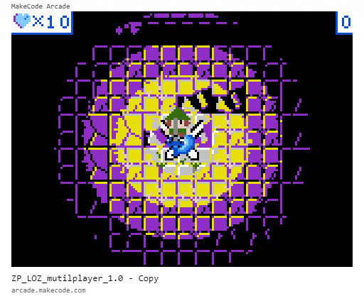

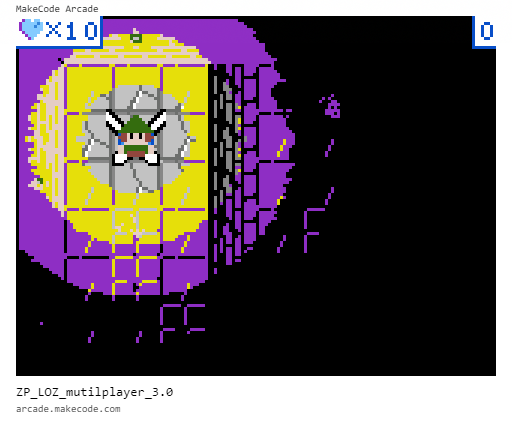
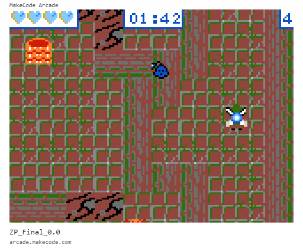
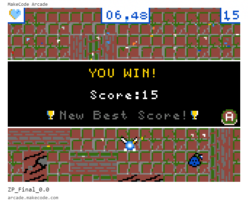


Short placeholder summary about early coding practice.

Short placeholder summary about earlier websites or assignments.

Short placeholder summary about present portfolio work.
Placeholder body summary text describing experiments, class projects, small websites, interactive layouts, or future coding ideas.
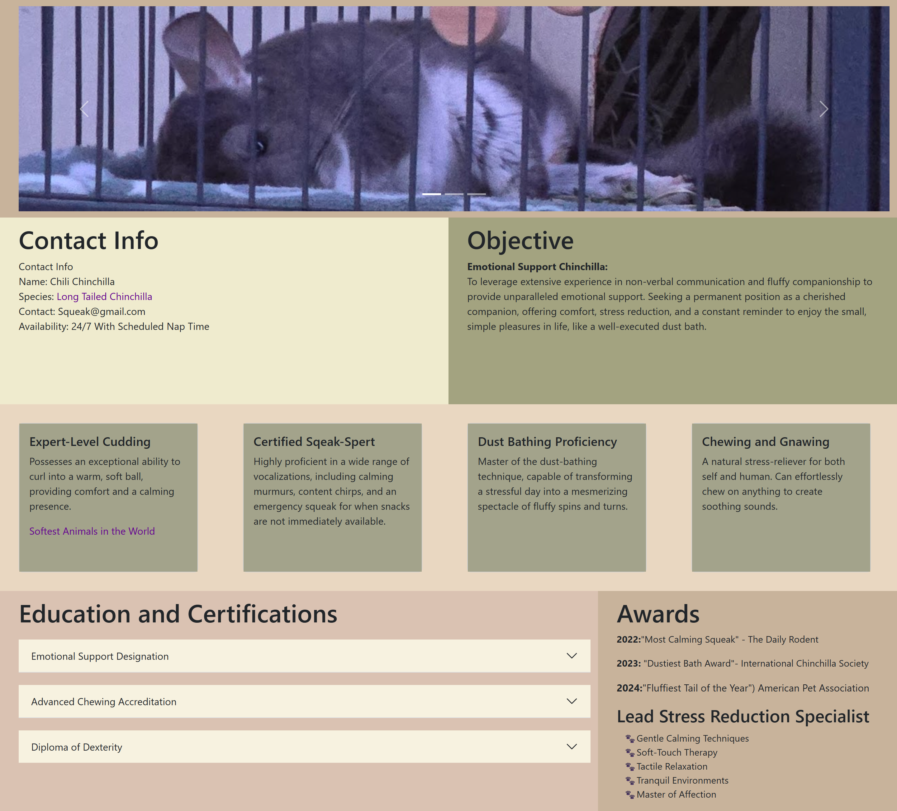
Short description for coding project one.
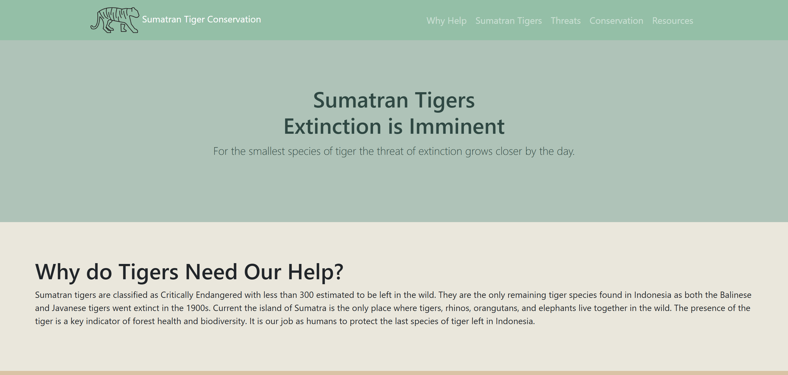
Short description for coding project two.

Short description for coding project three.

Short description for coding project four.